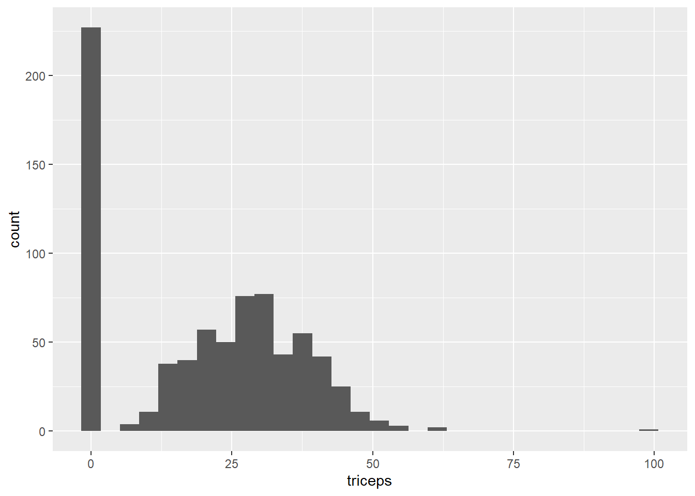

Blog van Rebecca Barter onder de titel ‘Tidymodels: tidy machine learning in R’
analyse
Author
Rebecca Barter, bewerking Harrie Jonkman
Published
April 22, 2021
Tidymodels: een nette en consistente manier om met machine learning in R te werken
Tidyverse is misschien wel een van de grootste successen van R de laatste jaren. Het is een basispakket (een suite van pakketten) waarmee je heel veel statistiscche bewerkingen goed en betrekkelijk eenvoudig kunt uitvoeren. De laatste jaren is tidymodels ontwikkeld dat voor het modelleren van data het basispakket moet worden en het ontwikkelt zich vergelijkbaar de gereedschapskist van tidyverse maar dan op het gebied van machine learning.
Waarom tidymodels? Nou, het blijkt dat R een consistentieprobleem heeft. Omdat alles rondom machine learning door verschillende mensen is gemaakt, allemaal met verschillende principes, heeft alles een net iets andere interface gekregenen. Om de boel in lijn te houden is onderhand een frustrerende bezigheid. Enkele jaren geleden ontwikkelde Max Kuhn (nu bij RStudio in dienst) het caret R-pakket, dat is zo’n uniforme interface voor een groot aantal machine learning-modellen die er in R zijn. Het programma caret bestaat nog steeds, was in veel opzichten geweldig en is nog steeds goed te gebruiken. Maar in andere opzichten is het beperkt. Zo kan het vrij traag zijn, zelfs bij gebuik van data in bescheiden omvang.
caret was een geweldig uitgangspunt, dus RStudio heeft Max Kuhn ingehuurd om te werken aan een tidy versie van caret. Hij en veel anderen ontwikkelden de afgelopen jaren tidymodels.tidymodels is al een paar jaar in ontwikkeling en delen ervan waren al eerder uitgebracht. Die volledige versie is in het voorjaar van 2020 gepresenteerd en Barter schreef vlak daarvoor deze tutoriol. Ondertussen is het voldoende ontwikkeld als je het wil leren! Terwijl caret niet verder ontwikkeld wordt (je kunt caret blijven gebruiken en je bestaande caret-code werkt nog steeds, het pakket wordt alleen niet onderhouden), zal tidymodels het uiteindelijk overbodig maken.
Deze tutorial van Barter is gebaseerd op Alison Hill’s dia’s van Introduction to Machine Learning with the Tidyverse, die alle dia’s bevat voor de cursus die ze met Garrett Grolemund voor RStudio heeft voorbereid::conf(2020), en Edgar Ruiz’s Gentle introduction to tidymodels op de website van RStudio. In deze tutorial gaat zij ervan uit dat de gebruiker bepaalde basiskennis heeft, voornamelijk omgaan met dplyr (b.v. piping %>% en een functie zoals mutate()).
Wat is tidymodels?
Net als tidyverse, dat uit verschillende pakketten bestaat zoals ggplot2 en dplyr, zitten er ook in tidymodels enkele kernpakketten, zoals
rsample: voor het uit elkaar halen van een datasample (b.v. train/test of cross-validatie);
recipes: voor pre-procesfuncties;
parsnip: voor het specificeren van het model;
yardstick: voor het evalueren van van het model;
tune: voor het afstemmen van parameters;
workflow: om alles samen te brengen.
Net zoals je de hele suite aan pakketten van tidyverse kunt binnenhalen door library(tidyverse) in te tikken. tidymodels bestaat dus uit verschillende pakketten en soms zal ik hieronder individuele pakketten noemen.
Eerst maar eens de boel klaarzetten
Als je deze pakketten nog niet hebt geïnstalleerd, moet je dat wel eerst doen (slechts één keer) door install.packages("tidymodels") te gebruiken. Vervolgens laad je bepaalde bibliotheken: tidymodels en tidyverse.
# laad de relevante tidymodels pakkettenlibrary(tidymodels)
Warning: package 'tidymodels' was built under R version 4.1.3
v broom 0.8.0 v recipes 0.2.0
v dials 1.0.0 v rsample 0.1.1
v dplyr 1.0.9 v tibble 3.1.7
v ggplot2 3.3.6 v tidyr 1.2.0
v infer 1.0.2 v tune 0.2.0
v modeldata 0.1.1 v workflows 0.2.6
v parsnip 1.0.0 v workflowsets 0.2.1
v purrr 0.3.4 v yardstick 1.0.0
Warning: package 'broom' was built under R version 4.1.3
Warning: package 'dials' was built under R version 4.1.3
Warning: package 'scales' was built under R version 4.1.3
Warning: package 'dplyr' was built under R version 4.1.3
Warning: package 'ggplot2' was built under R version 4.1.3
Warning: package 'infer' was built under R version 4.1.3
Warning: package 'parsnip' was built under R version 4.1.3
Warning: package 'recipes' was built under R version 4.1.3
Warning: package 'tibble' was built under R version 4.1.3
Warning: package 'tidyr' was built under R version 4.1.3
Warning: package 'tune' was built under R version 4.1.3
Warning: package 'workflows' was built under R version 4.1.3
Warning: package 'workflowsets' was built under R version 4.1.3
Warning: package 'yardstick' was built under R version 4.1.3
-- Conflicts ----------------------------------------- tidymodels_conflicts() --
x purrr::discard() masks scales::discard()
x dplyr::filter() masks stats::filter()
x dplyr::lag() masks stats::lag()
x recipes::step() masks stats::step()
* Use suppressPackageStartupMessages() to eliminate package startup messages
library(tidyverse)
Warning: package 'tidyverse' was built under R version 4.1.3
Warning: package 'readr' was built under R version 4.1.3
Warning: package 'stringr' was built under R version 4.1.3
-- Conflicts ------------------------------------------ tidyverse_conflicts() --
x readr::col_factor() masks scales::col_factor()
x purrr::discard() masks scales::discard()
x dplyr::filter() masks stats::filter()
x stringr::fixed() masks recipes::fixed()
x dplyr::lag() masks stats::lag()
x readr::spec() masks yardstick::spec()
# laad de Pima Indians dataset van de mlbench datasetlibrary(mlbench)data(PimaIndiansDiabetes)#Wat zit eringlimpse(PimaIndiansDiabetes)
We zullen gebruik maken van de Pima Indian Women’s diabetes-dataset dat informatie bevat over de diabetes status van 768 Pima Indian vrouwen(diabetes). In de dataset zitten daarnaast enkele predictoren zoals het aantal zwangerschappen (pregnant), concentratie glucose (glucose), diastolische bloeddruk (pressure), triceps huidplooidikte (triceps), 2 uur serum insuline (insuline), BMI (mass), diabetes stamboom functie (pedigree) en hun leeftijd (age). Voor het geval je het je afvraagt, de Pima Indianen zijn een groep indianen die leven in een gebied dat bestaat uit wat nu centraal en zuidelijk Arizona is. De korte naam “Pima” zou afkomstig zijn van een zinsnede die “ik weet het niet” betekent, die ze herhaaldelijk gebruikten in hun eerste ontmoetingen met Spaanse kolonisten. Wikipedia bedankt!
# Geef de dataset een kortere naam omdat we wat lui zijndiabetes_orig <- PimaIndiansDiabetes
Een snelle verkenning van de dataset toont aan dat er meer nullen in de gegevens zitten dan verwacht (vooral omdat een BMI of tricep huiddikte van 0 onmogelijk is), wat betekent dat ontbrekende waarden als nullen worden geregistreerd. Zie bijvoorbeeld het histogram van de tricep huidplooidikte, waar de nullen voor dikte opvallen.
`stat_bin()` using `bins = 30`. Pick better value with `binwidth`.

Dit fenomeen is ook te zien in de glucose-, druk-, insuline- en massavariabelen. We zetten eerst de 0-scores in alle variabelen (behalve “zwanger”) over naar NA (missende waarde). Daarvoor gebruiken we de mutate_at()functie (die binnenkort wordt vervangen door mutate() met across()) om aan te geven op welke variabelen we onze muterende functie willen toepassen. We gebruiken de if_else()functie om aan te geven waar we de waarde mee moeten vervangen als de voorwaarde waar of onwaar is.
diabetes_clean <- diabetes_orig %>%mutate_at(vars(triceps, glucose, pressure, insulin, mass), function(.var) { if_else(condition = (.var ==0), # als waar (bv als het 0 is)true =as.numeric(NA), # zet er de waarde NA voor in de plaatsfalse = .var # anders laat het zoals het is ) })
Onze gegevens zijn klaar. Laten we beginnen met het maken van een aantal tidymodels!
Haal train/test sets uit elkaar
Laten we onze data verdelen in trainings- en testdata. De trainingsdata worden gebruikt om ons model te vinden en de parameters in te stellen (tune). De testdata gebruiken we alleen om de werking van het finale model vast te stellen. Dat splitten kunnen we doen door de inital_split() functie (van het rsample pakket). Dat creëert een speciaal “split” object.
set.seed(234589)# deel de data op in trainng (75%) en testing (25%)diabetes_split <-initial_split(diabetes_clean, prop =3/4)diabetes_split
<Analysis/Assess/Total>
<576/192/768>
diabetes_split, ons gesplitste object, vertelt ons hoeveel waarnemingen we hebben in de trainingsset, de testset en de gehele dataset: <train/test/totaal> (576/192/768).
De trainings- en testsets kunnen uit het “split”-object worden gehaald met behulp van de training() en testing() functies. Hoewel we deze objecten niet echt zullen gebruiken in de pipeline (daarvoor zullen we het diabetes_split-object zelf gebruiken).
# haal training en testing sets uit elkaardiabetes_train <-training(diabetes_split)diabetes_test <-testing(diabetes_split)
Op een gegeven moment zullen we de parameters hiervan wat willen tuenen (afstemmen). Dat doen we met cross-validatie. Zo ontstaat er met vfold_cv() een cross-validatie versie van de trainingsset waar we zo op terugkomen.
# creeer CV object van training datadiabetes_cv <-vfold_cv(diabetes_train)
Defineeer een recipe
Met het pakket recipes kun je de variabelen een rol geven, als uitkomst of voorspellende variabele (gebruik een “formule”) b.v.. Maar met recipe kun je ook andere voorbereidingsstappen zetten die je nodig acht (zoals standaardiseren, imputeren, PCA, etc). Een recipe voer je uit in delen (gelaagd op elkaar door pipes %>% te gebruiken):
Specificeer de formule (recipe()): specificeer eerst wat is de uitkomstvariabele en wat zijn de predictoren;
Specificeer pre-processingsteps (step_zzz()): defineer voorbereidingsstappen, zoals imputatie, creëren van dummy variabelen, schalen en wat al niet meer
Zo kunnen we bijvoorbeeld de volgende recipe maken.
# defineer de `recipe`diabetes_recipe <-# dat bestaat uit de volgende formule (uitkomst ~ predictoren)recipe(diabetes ~ pregnant + glucose + pressure + triceps + insulin + mass + pedigree + age, data = diabetes_clean) %>%# en voeren we enkele voorbereidingsstappen uit (normaliseren en imputeren)step_normalize(all_numeric()) %>%step_knnimpute(all_predictors())
Warning: `step_knnimpute()` was deprecated in recipes 0.1.16.
Please use `step_impute_knn()` instead.
This warning is displayed once every 8 hours.
Call `lifecycle::last_lifecycle_warnings()` to see where this warning was generated.
Als je ooit eerder formules hebt gezien (bijvoorbeeld met behulp van de lm() functie in R), dan weet je misschien dat we onze formule veel efficiënter hadden kunnen schrijven met behulp van een shortcut, waarbij de . alle variabelen in de gegevens vertegenwoordigt: outcome ~ .
De volledige lijst van beschikbare voorbewerkingsstappen is hier te vinden. In de bovenstaande chunck hebben we de functies all_numeric() en all_predictors() gebruikt als argumenten van voorbereiding. Deze worden “rolselecties” genoemd en geven aan dat we de stap willen toepassen op “alle numerieke” variabelen of “alle predictoren”. De lijst van alle potentiële rolselectoren kan worden gevonden door ?selectis in je console te typen.
Merk op dat we het originele diabetes_clean data-object hebben gebruikt (we stellen recipe(..., data = diabetes_clean)), in plaats van het diabetes_train-object of het diabetes_split-object. Het blijkt dat we deze allemaal hadden kunnen gebruiken. Alle recipes die op dit punt uit het dataobject worden gehaald zijn de namen en rollen van de uitkomst en de voorspellende variabelen. We zullen deze recipe later toepassen op specifieke datasets. Dit betekent dat voor grote datasets een kleinere dataset gebruikt wordt om tijd en geheugen te besparen.
Inderdaad, als we een samenvatting van het diabetes_recipe object printen, dan laat het ons gewoon zien hoeveel voorspellingsvariabelen we hebben gespecificeerd en welke stappen we hebben gespecificeerd (maar het implementeert ze eigenlijk nog niet!).
diabetes_recipe
Recipe
Inputs:
role #variables
outcome 1
predictor 8
Operations:
Centering and scaling for all_numeric()
K-nearest neighbor imputation for all_predictors()
Als je de voorbewerkte dataset zelf wilt extraheren, kunt je eerst prep() het recept voor een specifieke dataset en juice() het voorbewerkte recept om de voorbewerkte gegevens te extraheren. Het blijkt dat het extraheren van de voorbewerkte data eigenlijk niet nodig is voor de pipeline, omdat dit onder de motorkap gebeurt als het model geschikt is. Soms is het toch nuttig.
diabetes_train_preprocessed <- diabetes_recipe %>%# apply the recipe to the training dataprep(diabetes_train) %>%# extract the pre-processed training datasetjuice()diabetes_train_preprocessed
Tot nu toe hebben we onze data verdeeld in training en test-sets en onze pre-proces stappen gespecificeerd door een recipe te gebruiken. Nu willen we ons model definiëren en daarvoor gebruiken we het parsnip pakket dat in tidymodels zit.
Parsnip biedt een uniforme interface voor de enorme verscheidenheid aan modellen die er in R bestaan. Dit betekent dat je slechts één manier hoeft te leren om een model te specificeren en dan kun je dit gebruiken voor allerlei verschillende modellen, vaak met enkele coderegel.
Er zijn een paar primaire componenten in de modelspecificatie opgeslagen:
Het model type: wat voor soort model wil je gebruiken, zoals rand_forest() voor het random forest-model, logistic_reg() voor het logistisch regressie-model, svm_poly() voor een polynomiaal SVM-model, enz. De volledige lijst van modellen die beschikbaar zijn via parsnip kan [hier] (link naar website) vinden.
De arguments: de model parameter waarden (de benaming is consistent over verschillende modellen), door het gebruik van set_args().
De engine: het onderliggende pakket waar het model van wegkomt (bv. “ranger” voor implementatie van Random Forest), door het gebuik van set_engine().
De mode: het type voorspelling - omdat verschillende pakketten zowel classificatie (binaire/categoriale voorspelling) en regressie (continue voorspelling) kunnen uitvoeren, door het gebruik van set_mode().
Als we bijvoorbeeld een random forest model willen gebruiken, zoals dat in het ranger pakket zit, met als doel classificatie en we willen de try parameter tunen (het afstemmen van het aantal willekeurig gekozen variabelen dat bij elke splitsing in aanmerking moet worden genomen), dan moeten we de volgende modelspecificatie definiëren:
rf_model <-# specificeren dat het model random forest isrand_forest() %>%# specificeren dat we de `mtry` parameter moeten afstemmenset_args(mtry =tune()) %>%# selecteren van de motor van het pakket dat onder het model zitset_engine("ranger", importance ="impurity") %>%# kiezen dat je voor continue analyse (regressie) of categoriale analyse (classificatie) gaatset_mode("classification")
Als je later het variabele belang van jouw uiteindelijke model wilt kunnen onderzoeken, moet je het engine argument opnieuw instellen. De volgende code specificeert bijvoorbeeld een logistisch regressiemodel uit het glm pakket.
lr_model <-# specificeer een logistisch regressiemodellogistic_reg() %>%# selecteer het pakket dat bij dit model hoortset_engine("glm") %>%# kies voor een continue regressie of binaire classificatie wijzeset_mode("classification")
Deze code draait niet het model. Net als de recipe, is het veel meer een beschrijving van het model. Echter, wanneer je een parameter op tune() zet wordt het later gestemd in de stemfase van de pipeline (bv. om de waarde vast te stellen van de parameter die de beste performance geeft). Je kunt ook zelf een bepaalde waarde aan de parameter geven wanneer je het niet wilt afstemmen, bv door set_args(mtry = 4) te gebruiken. Een ander ding om op te merken is dat niets wat deze modelspecificatie betreft specifiek is voor de diabetes-dataset.
Alles in een workflow samenbrengen
We zijn klaar om het model en de recipes in een workflow te plaatsen. Een workflow zet je op door het gebruik van workflow() (van het workflows pakket) en dan kun je een recipe en een model toevoegen.
# zet de workflow oprf_workflow <-workflow() %>%# voeg de `recipe` toeadd_recipe(diabetes_recipe) %>%# voeg het `model` toeadd_model(rf_model)
Merk op dat we de voorbewerkingsstappen nog niet in de recipe hebben geïmplementeerd noch dat we het model hebben gepast. We hebben alleen maar het raamwerk geschreven. Pas als we de parameters hebben afgestemd of in het model hebben gepast, worden het recept en het model daadwerkelijk geïmplementeerd.
Afstemmen van de parameters
Omdat er een parameter is ontwikkeld om af te stemmen (mtry), moeten we dat daar voor gebruiken (bv. de waarde kiezen die de beste performance laat zien) voordat we het model passen. Als je geen parameters hebt om af te stemmen, kun je dit deel overslaan.
Dat afstemmen doen we door een cross-validation object (diabetes_cv) te kiezen. Om dat te doen specificeren we de range van mtry waarden die we willen gebruiken en dan voegen we een stemmingslaag toe aan onze workflow door tune_grid() te gebruiken (van het tune pakket). We richten ons op twee maten: accuracy en roc_auc (van het yardstick pakket). Die vertellen ons welke maten we het beste kunnen gebruiken.
# specificeer de waarden die je wilt gebruikenrf_grid <-expand.grid(mtry =c(3, 4, 5))# extraheer resultatenrf_tune_results <- rf_workflow %>%tune_grid(resamples = diabetes_cv, #CV objectgrid = rf_grid, # grid van waarden om te proberenmetrics =metric_set(accuracy, roc_auc) # maten waar we naar moeten kijken )
Warning: package 'ranger' was built under R version 4.1.3
Je kunt verschillende parameters afstemmen door verschillende parameters aan de expand.grid() functie toe te voegen, bv. expand.grid(mtry = c(3, 4, 5), trees = c(100, 500)).
Het is altijd goed om de resultaten van de cross-validatie goed te onderzoeken. collect_metrics() is echt een handige functie die in verschillende omstandigheden kan worden gebruikt om te vergelijken die zijn berekend in het object dat is gebruikt. In dit geval komen de maten van de cross-validatie performance over de verschillende waarden van de performance.
Ten opzichte van accuracy en AUC laat mtry = 4 de beste performance zien (hoogste gemiddelde waarden).
Afronden van de workflow
We willen een laag aan onze workflow toevoegen die overeenkomt met de afgestemde parameter, d.w.z. dat we mtry instellen als de waarde die de beste resultaten opleverde. Als je geen parameters hebt afgestemd, kun je deze stap overslaan.
We kunnen de beste waarde voor de nauwkeurigheidsmetriek extraheren door de select_best()functie toe te passen op het afstemmingsobject.
Nu we ons recipe en ons model hebben gedefinieerd en de parameters van het model hebben getuned, zijn we klaar om daadwerkelijk het uiteindelijke model te draaien. Aangezien al deze informatie in het workflow-object zit, zullen we de last_fit() functie toepassen op onze workflow en ons train/test-splitsingsobject. Dit zal automatisch het door de workflow gespecificeerde model trainen met behulp van de trainingsgegevens en evaluaties produceren op basis van de testset.
rf_fit <- rf_workflow %>%# draaien op de trainingsset en evalueren op de test setlast_fit(diabetes_split)
Merk op dat het object dat wordt gecreëerd een data-frame-achtig object is; het is een tibble met listkolommen.
Dit is echt een aardige eigenschap van tidymodels (en ook waarom je zo goed kunt werken met tidyverse) omdat je al je nette handelingen op het modelobject kunt uitvoeren.
Aangezien we het trainings/testobject al hebben geleverd op het moment dat we in de workflow werken, worden de maten geëvalueerd op de testset. Wanneer we nu de collect_metrics() functie gebruiken (herinner ons dat we deze hebben gebruikt bij het afstemmen van onze parameters), haalt deze de prestaties van het uiteindelijke model (aangezien rf_fit nu bestaat uit een enkel definitief model) toegepast op de test set.
Overall is de performance heel goed, met een accuracy van 0.74 en een AUC van 0.82. Maar deze waarden zijn vaak lager dan in de trainingsset.
Je kunt de test set voorspellingen zelf gebruiken met de collect_predictions() functie. Let op dat er 192 rijen in het voorspellingsobject zitten dat overeenkomt met de test set observaties (juist om jou te laten zien dat deze gebaseerd zijn op de testset meer dan op de trainingsset).
# genereer voorspellingen vanuit de test settest_predictions <- rf_fit %>%collect_predictions()test_predictions
In de vorige paragraaf is het model dat is getraind op de trainingsgegevens geëvalueerd aan de hand van de testgegevens. Maar als je eenmaal jouw definitieve model hebt bepaald, wil je het vaak trainen op je volledige dataset en het dan gebruiken om de respons voor nieuwe gegevens te voorspellen.
Als je jouw model wilt gebruiken om de respons voor nieuwe waarnemingen te voorspellen, moet je de fit()functie op jouw workflow gebruiken en de dataset waarop je het uiteindelijke model wilt laten passen (bijvoorbeeld de volledige training + testdataset).
final_model <-fit(rf_workflow, diabetes_clean)
Het final_model object bevat een aantal zaken, waaronder het ranger-object dat getraind is met de parameters die via de workflow in rf_workflow zijn vastgelegd op basis van de gegevens in diabetes_clean (de gecombineerde trainings- en testgegevens).
final_model
== Workflow [trained] ==========================================================
Preprocessor: Recipe
Model: rand_forest()
-- Preprocessor ----------------------------------------------------------------
2 Recipe Steps
* step_normalize()
* step_impute_knn()
-- Model -----------------------------------------------------------------------
Ranger result
Call:
ranger::ranger(x = maybe_data_frame(x), y = y, mtry = min_cols(~4, x), importance = ~"impurity", num.threads = 1, verbose = FALSE, seed = sample.int(10^5, 1), probability = TRUE)
Type: Probability estimation
Number of trees: 500
Sample size: 768
Number of independent variables: 8
Mtry: 4
Target node size: 10
Variable importance mode: impurity
Splitrule: gini
OOB prediction error (Brier s.): 0.1595594
Als we de diabetes status van een nieuwe vrouw willen voorspellen, kunnen we de predict() functie gebruiken.
Bijvoorbeeld, definieren we de data voor een nieuwe vrouw.
# A tibble: 1 x 8
pregnant glucose pressure triceps insulin mass pedigree age
<dbl> <dbl> <dbl> <dbl> <dbl> <dbl> <dbl> <dbl>
1 2 95 70 31 102 28.2 0.67 47
De voorspelde diabetes status van deze nieuwe vrouw is “negatief”.
predict(final_model, new_data = new_woman)
# A tibble: 1 x 1
.pred_class
<fct>
1 neg
Variabele belang
Als je de belangrijkheid van een variabele uit je model wilt vaststellen, voor zover je dat kan zien, moet je het modelobject uit het fit() object halen (dat voor ons final_model heet). De functie die het model extraheert is pull_workflow_fit() en dan moet je het fit-object pakken dat de output bevat.
ranger_obj <-pull_workflow_fit(final_model)$fit
Warning: `pull_workflow_fit()` was deprecated in workflows 0.2.3.
Please use `extract_fit_parsnip()` instead.
ranger_obj
Ranger result
Call:
ranger::ranger(x = maybe_data_frame(x), y = y, mtry = min_cols(~4, x), importance = ~"impurity", num.threads = 1, verbose = FALSE, seed = sample.int(10^5, 1), probability = TRUE)
Type: Probability estimation
Number of trees: 500
Sample size: 768
Number of independent variables: 8
Mtry: 4
Target node size: 10
Variable importance mode: impurity
Splitrule: gini
OOB prediction error (Brier s.): 0.1595594
Vervolgens kun je het belang van de variabele uit het ranger-object zelf halen (variable.importance is een specifiek object in de ranger-output - dit zal moeten worden aangepast voor het specifieke objecttype van andere modellen).
ranger_obj$variable.importance
pregnant glucose pressure triceps insulin mass pedigree age
15.64236 79.84557 17.51228 21.64400 53.15198 43.77916 29.70545 32.32099